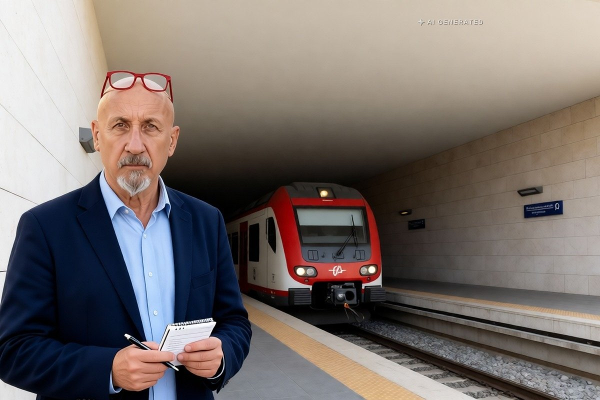

Sicilia · 4 novembre 2026
Palermo, l'anello ferroviario arriva al Politeama: aprono due fermate

Palermo Porto e Palermo Politeama entrano in servizio dopo lavori iniziati nel 2017. Dalla stessa data, però, di notte i treni fra Centrale e l'aeroporto di Punta Raisi sono sostituiti da bus.
di Franco Zanghì
Le due nuove fermate dell'anello ferroviario di Palermo, Palermo Porto e Palermo Politeama, sono state inaugurate il 3 novembre ed entrano in servizio per i passeggeri da oggi, 4 novembre. La tratta va da Notarbartolo a Giachery, poi Porto, e termina al Politeama, nel centro della città.
Il servizio
L'avviso di Rfi indica il servizio attivo nei giorni feriali e nei festivi. L'obiettivo annunciato è un treno ogni 30 minuti per direzione nei giorni feriali, con 60 corse fra le 6 e le 21.30, e una corsa all'ora la domenica e nei festivi, con 38 treni. Chi ha l'abbonamento Palermo Centrale-aeroporto può usarlo anche per le fermate nuove.
Il presidente della Regione Siciliana, Renato Schifani, ha annunciato la gratuità dei viaggi dal 4 novembre al 31 gennaio 2027 per chi sale o scende in una delle fermate dell'anello, parlando di oltre 500 mila biglietti gratuiti, e ha indicato in 54 milioni di euro le risorse regionali impegnate. L'assessore regionale alle Infrastrutture, Alessandro Aricò, ha precisato che non si tratta di una metropolitana ma del servizio ferroviario regionale che si estende.
I lavori erano partiti nel 2017. In mezzo ci sono stati il fallimento della prima impresa, la pandemia, i rincari dell'acciaio e le infiltrazioni d'acqua alla fermata Porto: quasi dieci anni per 1,6 chilometri di binari in centro. Il sindaco Roberto Lagalla ha riconosciuto il ritardo e ha collegato l'opera al progetto del tram, da integrare con bus e ferrovia.
Le notti senza treni per l'aeroporto
Dalla stessa data, e per i lavori del nodo di Palermo, fra le 21.30 e le 5 del mattino i treni fra Palermo Centrale e l'aeroporto di Punta Raisi sono sostituiti da bus, ogni notte tranne quella fra domenica e lunedì. I bus fermano a Centrale, Notarbartolo, Isola delle Femmine, Capaci, Carini e all'aeroporto.
Il programma dei lavori arriva fino a fine febbraio, ma i documenti delle ferrovie riportano date non sempre coincidenti: prima di partire conviene controllare il proprio treno sui canali di Rfi e Trenitalia.
Il punto
Che il treno arrivi a piazza Castelnuovo è una buona notizia per una città che da anni discute di mobilità senza vederne gli effetti, e tre mesi di gratuità sono il modo più semplice di far provare un servizio a chi non lo userebbe per abitudine.
Il nodo è la frequenza. Un treno ogni mezz'ora nei giorni feriali e uno all'ora nei festivi è un orario che funziona per chi programma lo spostamento, non per chi lascia l'auto a casa senza pensarci. Lo ha osservato anche Mari Albanese, del Partito democratico, ricordando che manca ancora il tratto verso la futura fermata Turrisi Colonna, quella che dovrebbe chiudere l'anello: se ne parla per il 2029.
Resta poi la coincidenza di date che conviene guardare con onestà: nello stesso giorno in cui il treno entra in centro, chi atterra a Punta Raisi di sera trova un bus nel traffico. È un disagio annunciato e temporaneo, ma per chi viaggia il servizio è quello che trova la notte in cui arriva.
Fonti
- Rfi, avviso di apertura delle fermate Palermo Porto e Palermo Politeama, 4 novembre 2026
- CityNext, Marco Gramigni, «Palermo, inaugurate le fermate Porto e Politeama dell'anello ferroviario: treni gratis per tre mesi», 3 novembre 2026
- Sicilianews24, «Anello ferroviario, Palermo Porto e Politeama aprono il 4 novembre», 2 novembre 2026
- Quotidiano di Sicilia, «Anello ferroviario di Palermo, fermate Politeama e Porto: ecco quando aprono», 2 novembre 2026
- Mobilita.org, «Anello ferroviario di Palermo: aperte Politeama e Porto», 3 novembre 2026
- Giornale di Sicilia, «Si inaugurano le due nuove fermate: orari e frequenza», 2 novembre 2026
Le frequenze e gli orari sono quelli annunciati all'avvio del servizio. Sulle date di fine dei lavori notturni al nodo di Palermo i documenti delle ferrovie non coincidono: il riferimento utile resta l'avviso aggiornato di Rfi e Trenitalia.